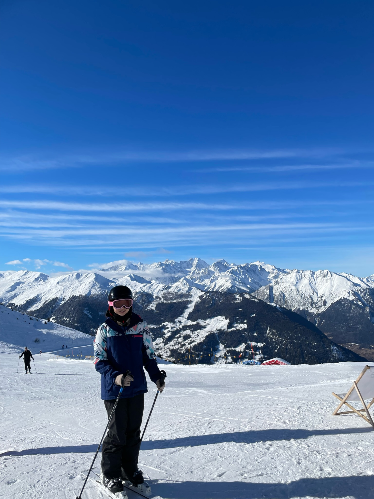

Hello, I'm Crystal, and skiing has been one of my favorite hobbies since I was eight years old. There's something magical about carving through fresh powder on the mountains, feeling the crisp air on my face, and the adrenaline rush from each run. My favorite season is summer, but skiing is one of the activities I look forward to most when winter is around the corner. Every year, my family would take my brothers and me to Tahoe multiple times to go skiing. I have two younger brothers, and my parents had enrolled us in lessons when we were younger, so it was always something the three of us bonded over and did together. Skiing has become more than just a sport for us—it is a family tradition that has created countless memories over the years. Even though I am away for college, I have had the opportunity to ski on the East Coast with friends, and my brothers are always eager to hear about the different ski resorts here and how they compare to those in California. The sense of freedom and excitement that skiing brings is something I hope to experience for years to come. On this website, I'll share a little bit about some of my favorite places to ski for different levels of skiers.
